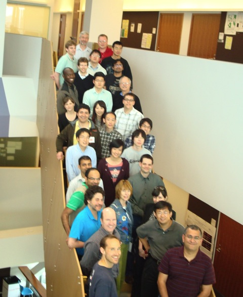

Second Bi-Annual XIA Project Meeting
The XIA Team held its second semi-annual project meeting at CMU on May 16-17, 2011. The agenda included breakout sessions focusing on interactions between the four core research areas, a poster session at which students presented early research results, and plenary sessions on future applications and directions for XIA.